Hiregrove
Rolegrove, formerly Hirebolt, is a job-search and application-preparation project spanning a React dashboard, FastAPI backend and browser extension. It became a place to explore explainable matching, evidence-backed documents, unfamiliar form controls, PostgreSQL tenancy and background work that survives interruptions. The user reviews the prepared material and presses the employer's Submit button.
A workflow that crosses three different surfaces
Rolegrove connects a job feed, a document builder and the employer's application form. The dashboard is React and Vite, the API is Python/FastAPI, and the extension has Chrome, Edge and Firefox builds. Each surface has a different job: the dashboard helps choose and prepare, the backend owns records and evidence, and the extension works with the page the applicant is actually using. The interesting problem is keeping those responsibilities coherent.
A user maintains application facts and a master resume, explores ranked jobs, reads the score breakdown and prepares a tailored document. On an employer page, the extension discovers fields, proposes supported values and helps review the retained result. Tracker then keeps statuses, notes and follow-up work together. These are connected states rather than a promise that clicking Apply completes an application.
The current workflow explicitly ends with the user's own Submit action. Batch preparation can handle up to twenty selected jobs, but review, opening an employer page and submission remain separate. That boundary makes the project a useful learning exercise in orchestration: automate preparation where its result can be inspected, while keeping consequential decisions visible.
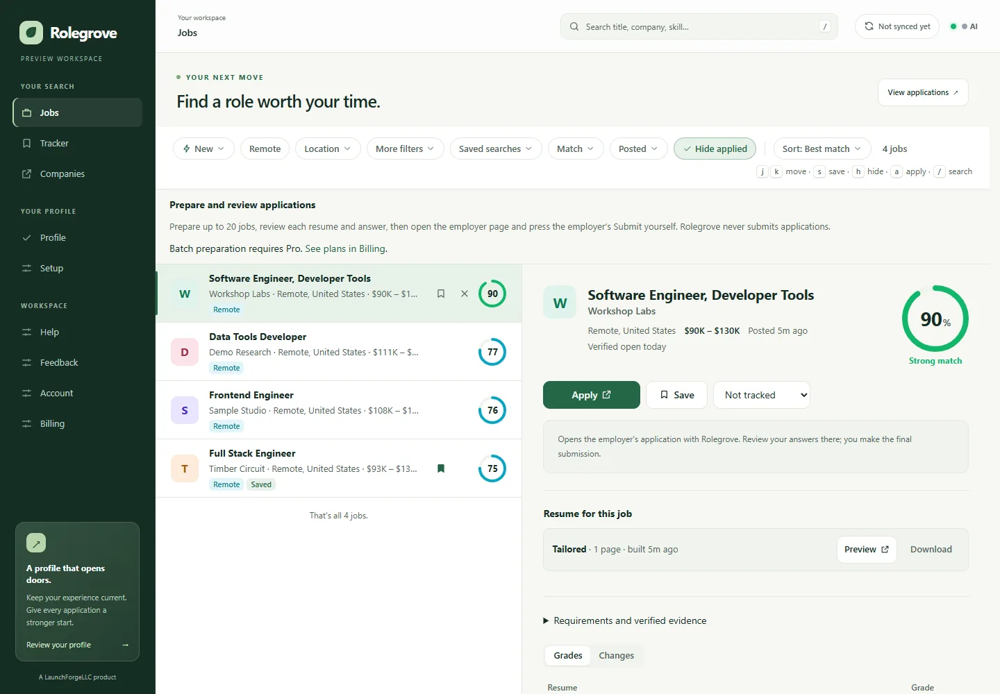
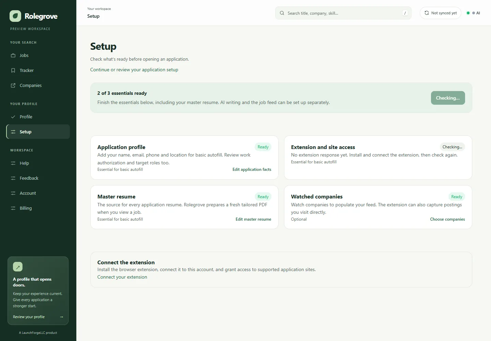
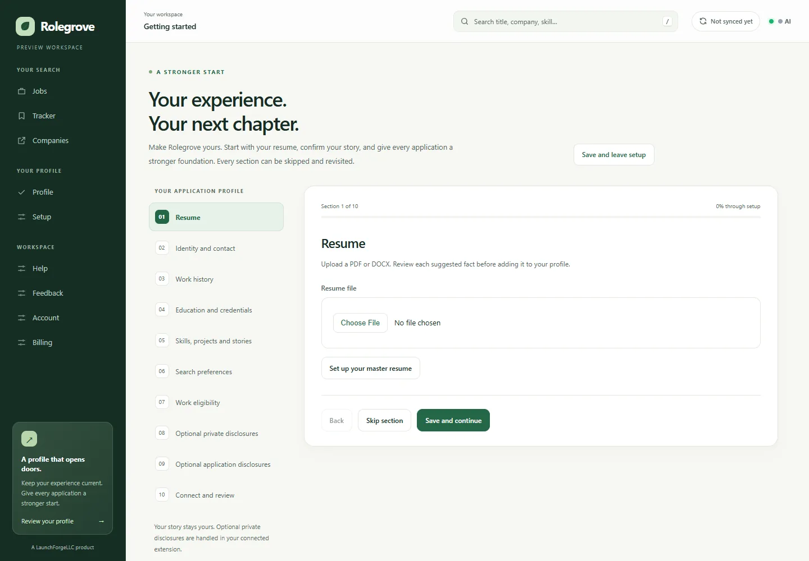
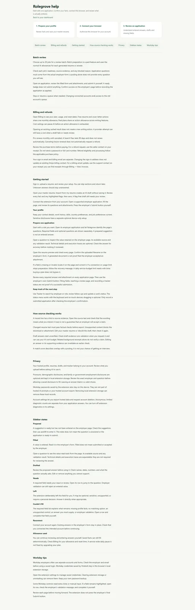
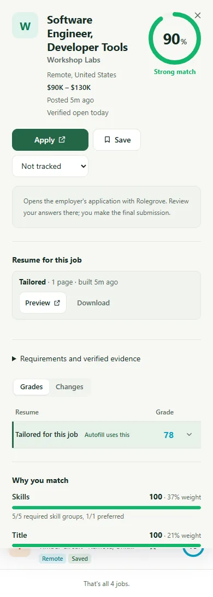
Moving from personal state to a shared data model
The current application uses PostgreSQL rather than the original SQLite-oriented setup. SQLAlchemy models and Alembic migrations separate shared job inventory from each user's relationship with it. A Job holds the posting, source and freshness information. UserJob holds the owner's match score, hidden state and reasons. This avoids rewriting a shared posting merely because one person's preferences changed.
Search has more than one representation. A weighted PostgreSQL tsvector gives titles, companies and descriptions different importance for full-text search, with a GIN index. pgvector stores 768-dimensional vectors, and shared job vectors have an HNSW cosine index. Personal embedding caches are owner-scoped; worker-side inference can populate missing vectors while the web process falls back to lexical behavior instead of loading model weights during a request.
A captured posting also has a distinct trust boundary. Shared verified source rows and private user captures are not interchangeable. Visibility checks and database constraints prevent private material from casually becoming a public canonical listing. Learning this model means thinking beyond a jobs table: who supplied the row, who may see it, what is shared and which interpretation belongs to one applicant?
An account boundary has to survive connection reuse
Multi-user operation changes the meaning of an ordinary database query. The application sets app.user_id transaction-locally and reapplies that context whenever a SQLAlchemy session starts another transaction. A handler can commit intermediate work without losing its owner boundary, and a pooled connection should not carry one applicant's identity into the next request. Forced row-level-security policies cover personal tables and private job visibility.
The API and worker use separately provisioned restricted roles, with neither superuser nor RLS-bypass privileges. Shared ingestion has no fallback to the API connection. Authentication and data access are also distinct: hosted bearer tokens are checked against configured signing keys, issuer, audience and expiry, while the development identity is explicitly limited to development mode.
The web auth client uses PKCE. Extension pairing then has its own origin and sender checks, and its opaque credentials are stored server-side as hashes with revocation state. Those pieces explore a practical security lesson: a credential being valid is only the beginning. Browser messages, database transactions, cached UI state and account deletion all need to preserve the same ownership decision.
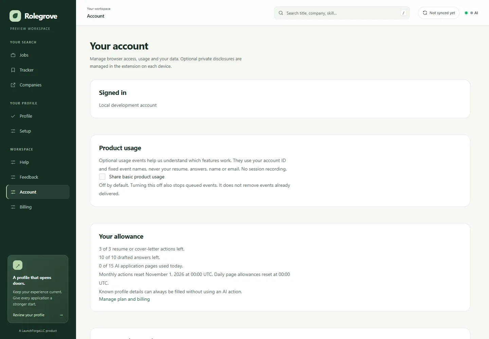
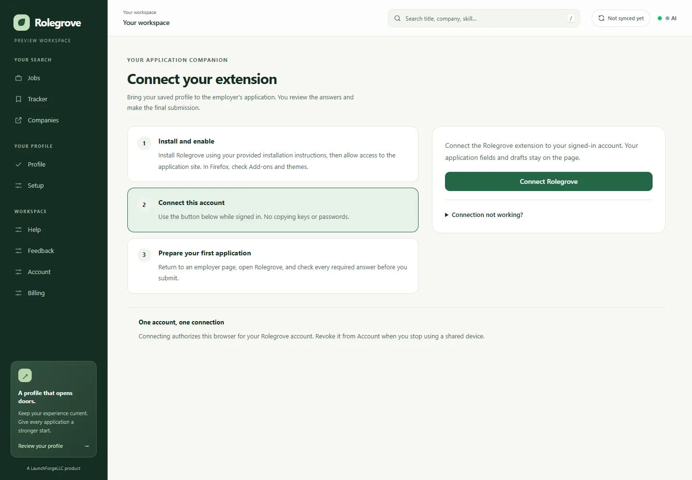
Discovery is a pipeline, not a directory count
Rolegrove discovers employer boards and fetches their postings through source-specific connectors. The source supports ATS families such as Greenhouse, Lever, Ashby and Workday, plus selected employer-site adapters. A directory entry is a candidate source, not a searchable open job. Freshness, closure and verification need to follow actual source observations rather than treating the existence of a company URL as inventory.
Sync work runs separately from interactive API requests. Normal boards and Workday have different cadences and budgets; batches release progress rather than holding the entire catalog until one long pass ends. The data model preserves first-seen and updated timestamps, source identifiers, normalized application URLs and content hashes. Those details support incremental updates and let the UI distinguish new discoveries from a posting merely being fetched again.
The learning topic is making imperfect external data useful without pretending it is uniform. Connectors need a consistent internal contract, while failures and unsupported sites remain visible. Personal captures provide a route for a posting the user is already viewing, but remain private. No directory size is used here as evidence of live coverage or successful employer applications.
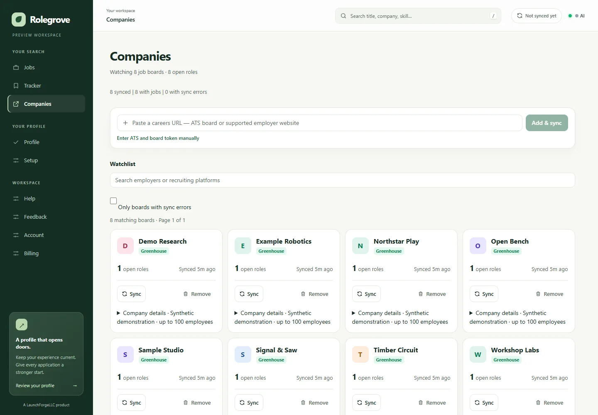
A match score should explain its evidence
The base matcher produces component scores and reasons for skills, title, seniority, location, salary and text overlap. Unknown information contributes less weight instead of becoming an invented positive signal. Eligibility conflicts can cap the score. Semantic and preference signals supplement this explainable base where available; the number remains a relevance heuristic, not an interview probability or an employer's ATS judgment.
The scoring audit is particularly revealing. Recognized benefits, privacy and equal-opportunity boilerplate was removed from relevance inputs, while hard eligibility checks still inspect the full posting. Explicit alternatives count as alternatives: satisfying Python in a Python-or-Kotlin requirement should not manufacture a Kotlin gap. Conversely, separate AND requirements remain separate obligations.
A second correction prevents a copied Target role heading from becoming evidence that the candidate has that role's skills. One- and two-page resumes with identical evidence also receive the same format contribution. These are lessons about measurement contamination: an attractive score is not useful if it rewards text the system inserted itself. Revisioned fingerprints then make old scores and document grades visibly stale rather than silently presenting them as current.
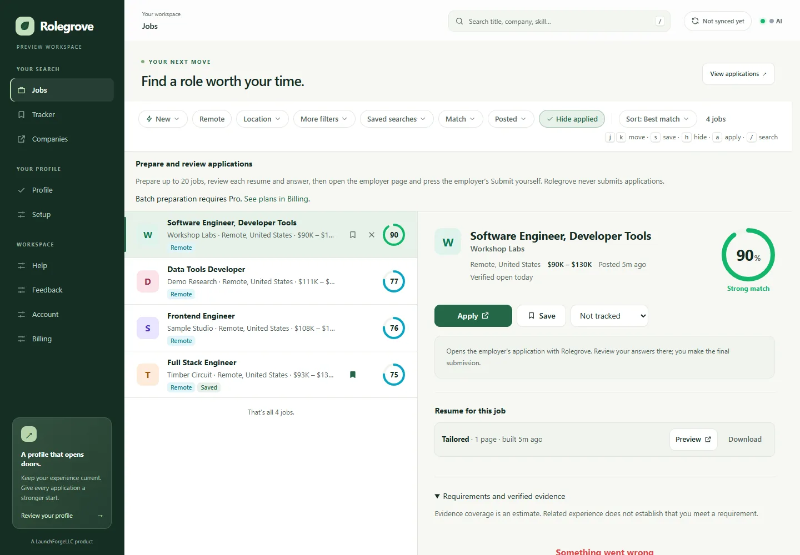
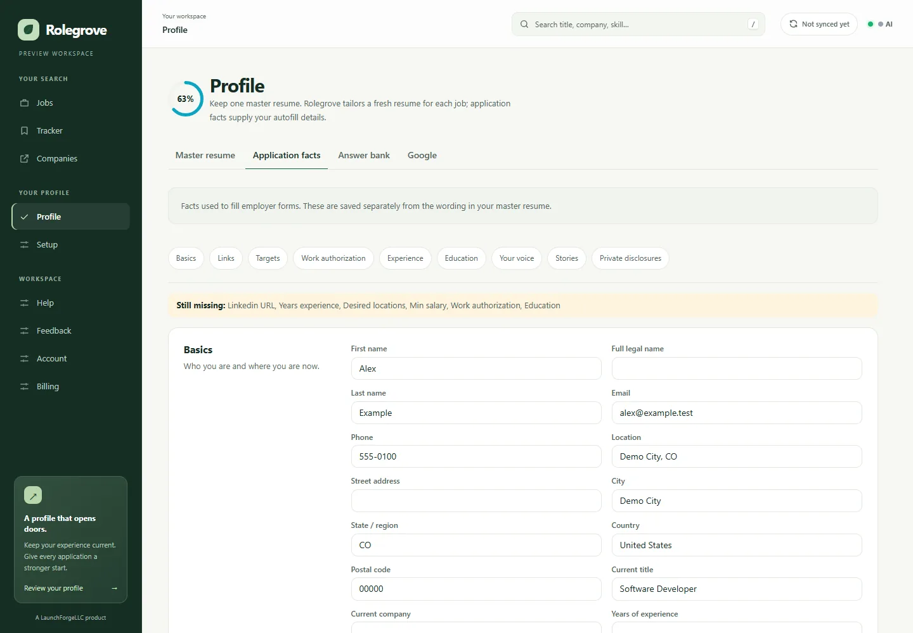
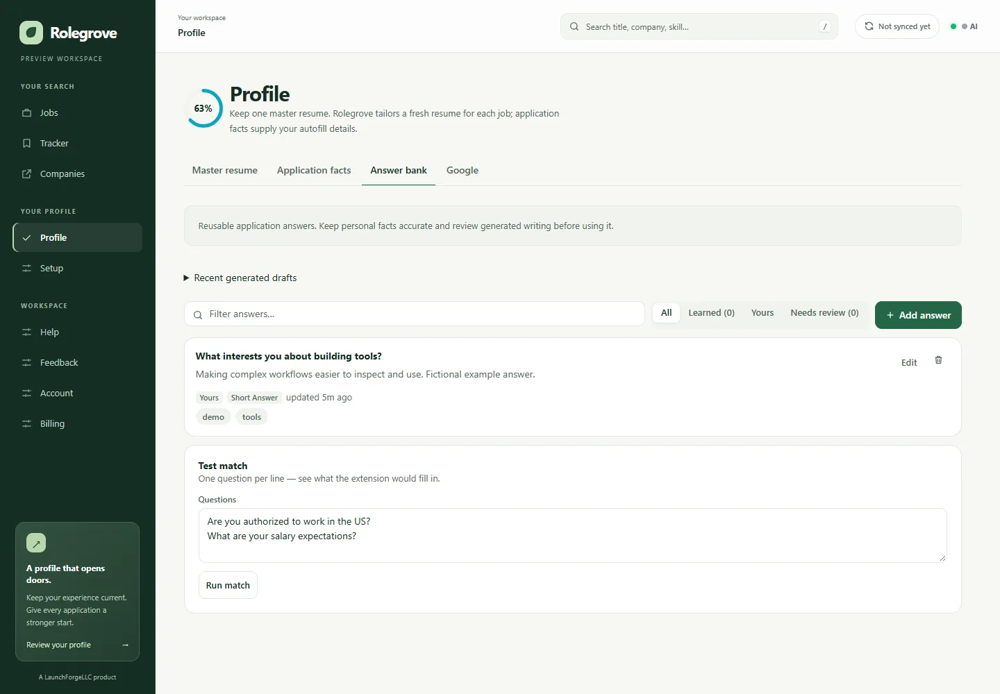
Tailoring a resume without inventing a better applicant
The resume builder starts from a structured master resume. It ranks existing evidence for the selected posting, preserves employment titles and bullets, and selects/reorders material inside a ReportLab layout. It begins with a minimum representation of roles, then adds relevant bullets and projects while respecting the two-page limit. That turns tailoring into constrained selection and layout rather than unconstrained biography generation.
The document's provenance is inspectable. Renderer proofs connect emitted fields to source entries, and related metadata must match one master entry together. Independently finding a title, employer and date somewhere in the resume would be insufficient: it could accidentally splice different jobs into a new one. Summary and bullet proofs distinguish exact evidence, permitted composition and unsupported text.
The PDF is an output artifact, not just a text preview. Stored bytes have an owner-prefixed path, size and SHA-256 digest. Master-update time and builder revision help prevent an obsolete build from being attached as a current one. The interesting technique is combining information retrieval, document geometry and provenance checks so the user can see both what changed and what supports the result.
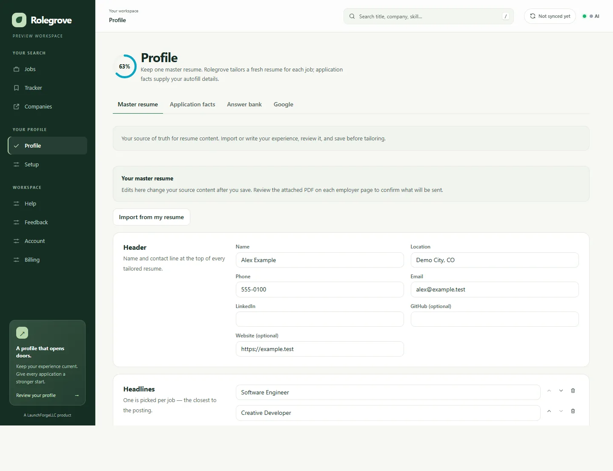
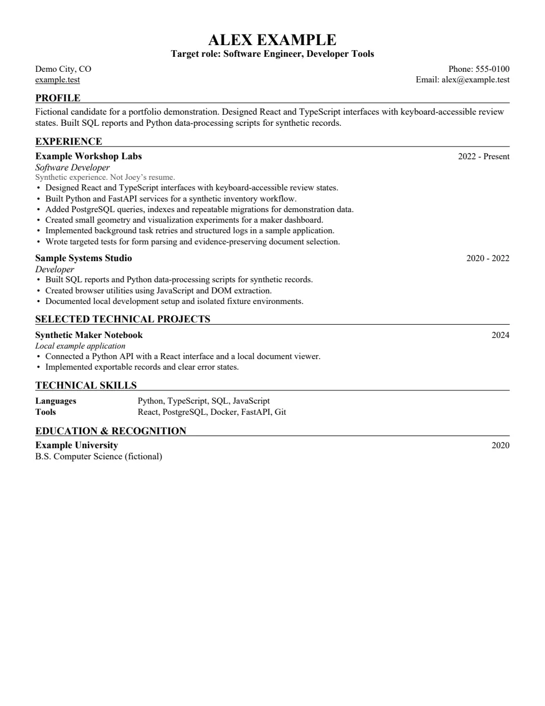
A form field is more than a label and a text box
An application page can contain native inputs, custom dropdowns, dependent questions, search-first location controls and embedded frames. The extension separates discovering the question from physically operating the widget. A semantic field contract records requested information, value shape, jurisdiction, currency, pay period, conditions and relationships to neighboring fields. Deterministic workers then resolve known values and interact with the actual control.
That distinction matters for questions that share vocabulary but require different answers. Annual and monthly compensation are not interchangeable; a destination-country choice is not proof of legal work authorization. A phone number being present in a profile does not make it the answer to every field containing the word phone. Unsupported consent and sensitive identity decisions need explicit applicant input.
Widget interaction has its own verification boundary. A combobox is not complete merely because text was typed into its search input: the supported option has to be selected and retained. Dropdown discovery failures leave a reason rather than counting as success. This became an experiment in coordinating language interpretation with deterministic browser behavior, keeping each layer responsible for a result it can actually observe.
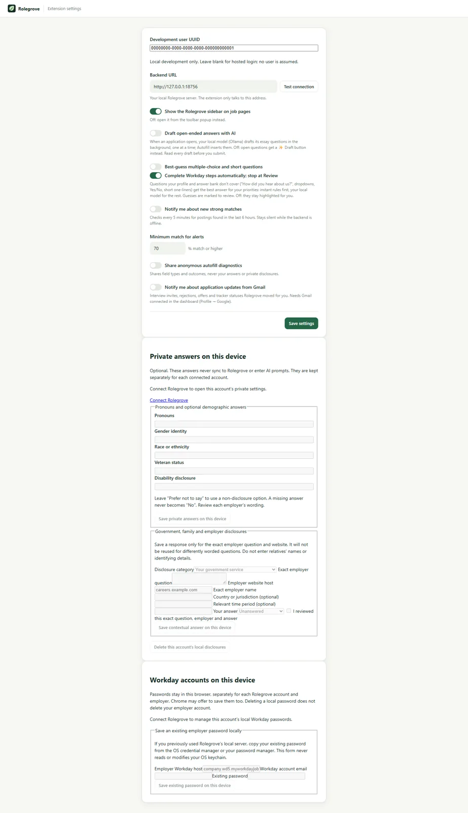
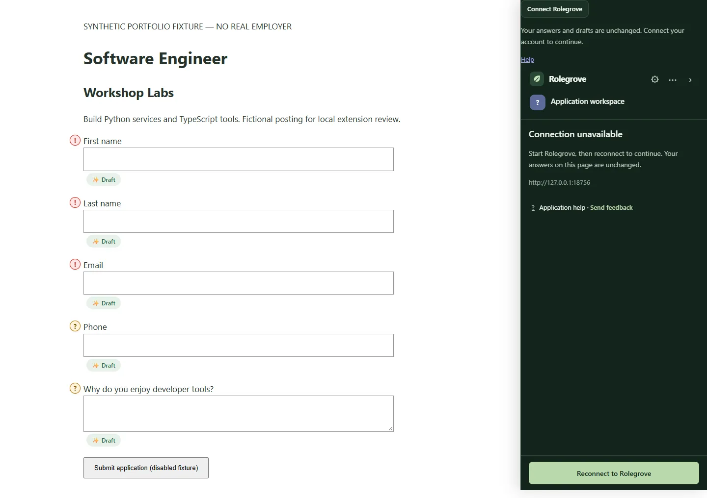
Review what the page retained, not what the model intended
The review redesign began with a concrete failure mode: a genuine profile value could be inserted into the wrong question and still look grounded. Matching the evidence was not enough. The implementation separates interpreting the original question from assessing the actual DOM readback against that meaning and the applicant's evidence. Relevance and provenance need to be checked together.
The review interface leads with the retained page value, its source, validation and next action. A prepared suggestion that has not been entered is a different state. Dependent answers, choices and context affect whether an earlier review is still applicable; changing the question context must invalidate stale approval. Repairs have to be read back again rather than inheriting the status of the value they replaced.
The result is a useful learning theme for AI-assisted software: make uncertainty and state transitions visible. Known facts, generated prose, low-risk inferences, missing information and consent decisions should not share one green check. Historical notes discuss older autonomous-submission experiments; the current Rolegrove design uses this review machinery to support preparation while leaving final submission to the applicant.
Preparation, attachment and submission are different events
BatchApply prepares up to twenty selected jobs and actual employer writing questions through durable tasks. Each review card tracks the resume digest and generated answers. Before opening the employer page, it fetches current preparation again; a changed fingerprint clears review and asks the user to inspect the new material. Only opaque task identifiers persist locally, rather than treating a saved browser flag as continuing approval of a changed document.
The extension has to distinguish a download from an attachment and an attachment from an employer-confirmed submission. Submission history preserves the posting and captured final answers, plus the exact resume bytes when upload verification supports that conclusion. A later tailored rebuild cannot retroactively become the document submitted earlier. Unknown or manually confirmed material stays labeled accordingly.
This is a provenance problem across time. The useful record is not merely which job was applied to, but which evidence-backed version was prepared and what can actually be established about the handoff. The current product does not press the employer's final Submit button. Review, explicit opening and the user's submission remain visible steps, even when preparation happens in the background.
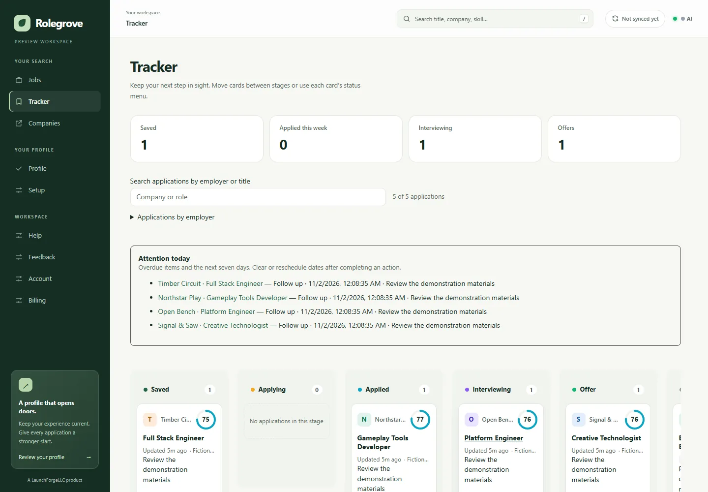
Background work that survives a lost request
Resume preparation, rescoring and ingestion can outlive an HTTP request. The current architecture separates the API from a durable worker. PostgreSQL tasks are claimed with FOR UPDATE SKIP LOCKED, prioritized and deduplicated for active work. The queue transaction is committed before expensive processing, while handler writes and completion have an explicit transaction boundary.
A claim has an immutable token tied to its attempt and lease. Completion, failure and progress updates are fenced against that original claim. If stale recovery gives the task to a new worker, the obsolete worker cannot overwrite it merely by still knowing the task ID. Live progress uses short independent transactions so it can become visible without committing the handler's business work early.
The runtime adds heartbeats, bounded retries, stale recovery and owner-scoped personal handlers, with a separate restricted worker connection for shared maintenance. Missing workers leave jobs queued rather than pretending a document exists. The lesson is that background execution is a state machine, not just moving a function to another thread. At-least-once handling still requires idempotent external effects; lease recovery does not create exactly-once behavior by itself.
Product rules become concurrency and lifecycle rules
Plan allowances, provider spending and account state add another set of engineering boundaries. Generated documents and drafted answers are accounted for as deliverables; provider usage has separate reservations and accounting. Owner-bound idempotency keys prevent a retry from becoming a new action accidentally. Database locks coordinate allowance admission and lifecycle changes rather than leaving quotas to a count shown in the interface.
The AI path preflights a conservative token-cost reservation and fails closed when it cannot obtain a usable estimate. It does not treat an estimate as exact billing. Hired mode makes the search read-only and coordinates the remaining paid-time and cancellation workflow. Export, deletion and credential revocation likewise affect queued work and future access, not just the visibility of an Account-page button.
This is where the project moves beyond an interesting AI demo. A generated answer is one outcome inside a system that also needs to handle retries, a closed tab, a deleted owner or a changed plan. The code explores those interactions, while the current readiness record keeps real-provider quality, hosted acceptance and public paid launch as separate unfinished work.
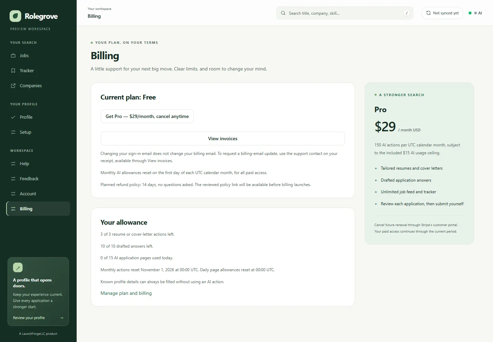
Make the system understandable before calling it finished
The interface distinguishes application facts from resume content, shows preparation and review state, and offers status menus as an alternative to dragging tracker cards. Connection guidance explains install, pair and first-application steps with actionable recovery. Text scale, focus behavior, loading/error headings and responsive layouts matter because this workflow already asks the user to keep several kinds of evidence in mind.
A separate Astro marketing site explores another toolchain: static pages, Markdown content collections, internal link checks and explicit draft/noindex behavior. Its release configuration requires real brand, domain and legal review records; supplying configuration does not publish the service. The source also includes a first-use research kit that clearly records no participant sessions, keeping automated walkthroughs distinct from observed usability research.
The project grew from a personal tool into a multi-user workspace, with public launch still ahead. The central design goal is to keep preparation understandable: preserve the applicant’s facts, show what changed, make recovery straightforward, and leave the final submission to the person applying.
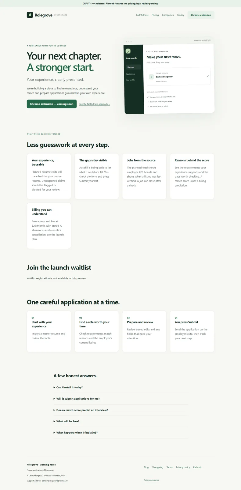
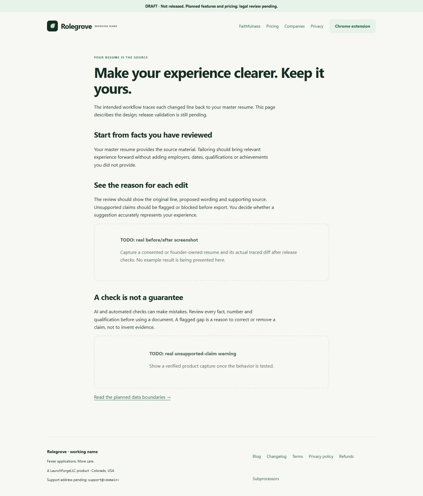
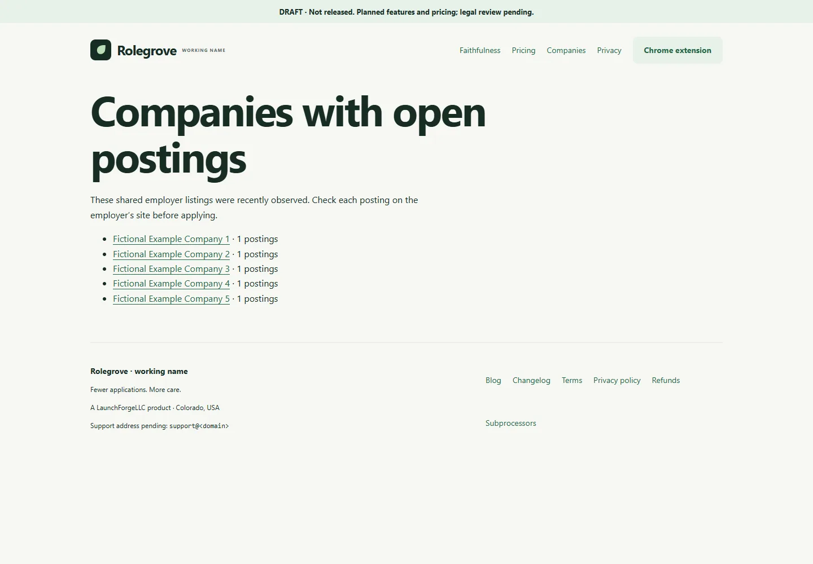
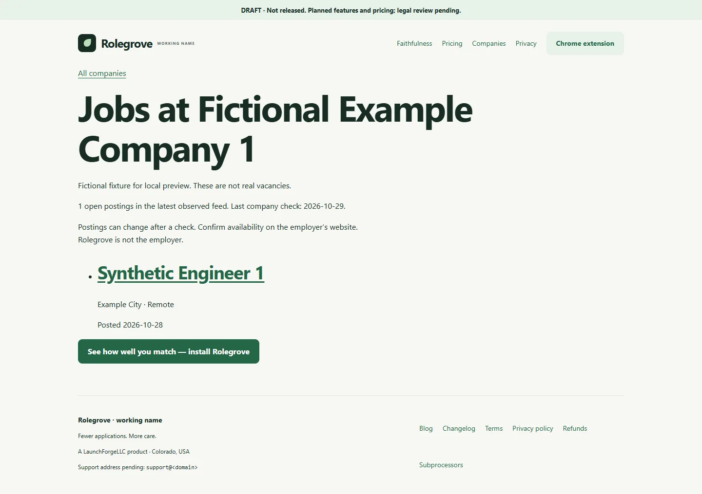
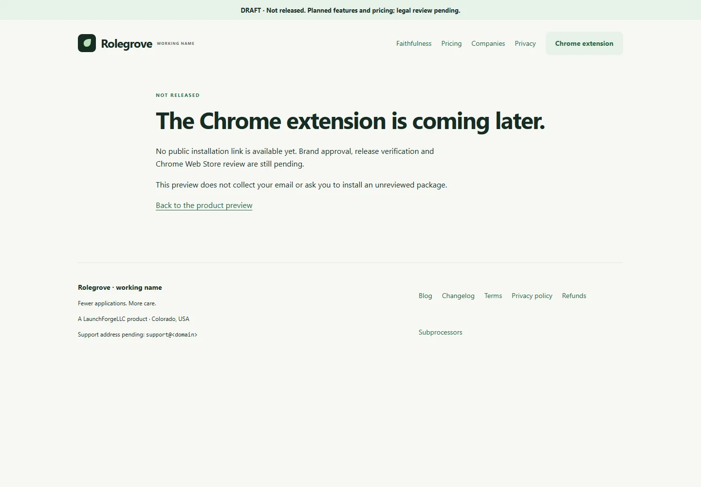
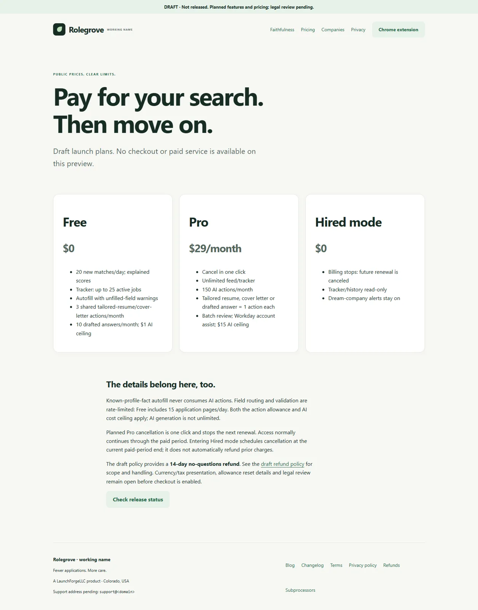